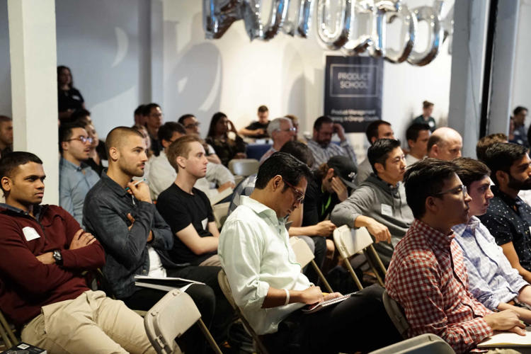
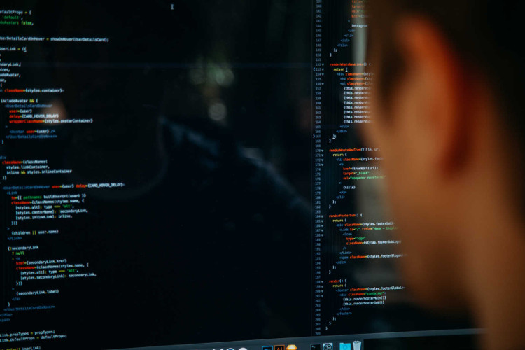

Descrizione professionale
La mia carriera lavorativa inizia a luglio 2008 quando collaboro con una società di consulenza in ambito qualità (ISO 9001).
Nell’autunno 2008 alle mie mansioni viene aggiunta l’aggiornamento di software aziendali creati con Microsoft Access; l’obiettivo di tali software è quello di tenere sotto controllo i costi delle commesse, sia dal punto di vista delle risorse umane che da quello dei materiali acquistati.
Da marzo 2009 e fino alle fine del 2011 divento co-docente per i corsi di apprendistato.
Alla fine del 2009 divento responsabile della divisione informatica e decido di creare ex-novo i software per la gestione delle commesse. Benché mi appoggi sempre a Microsoft Access riesco a produrre delle applicazioni totalmente personalizzate in tempi brevi e la soddisfazione cliente è molto alta.
Nel 2010 le consulenze qualità (ISO 9001) diventano più frequenti e inizio a seguire i clienti senza alcun supporto, passando dalla norma UNI EN ISO 9001:2000 alla versione 2008.
Nell’ambito della formazione divento unico docente dei corsi di “Alfabetizzazione informatica”, seguirò tre annualità con quattro corsi in totale, fino al 2013.
Nel 2012, in occasione della creazione di un software per la gestione dei lavori di progettazione e realizzazioni di impianti di trasporto liquidi alimentari, presento un’offerta tecnica che utilizzerà la tecnologia Java invece che Microsoft Access. Questo è dovuto in larga parte ai limiti tecnici della precedente piattaforma.
Lo stack di sviluppo diventa: postgreSQL, Java EE 6, Java SWT. Aiutato da un team in forte crescita creo tre grandi applicazioni gestionali, due di esse usate ancora oggi. La squadra di cui sono responsabile arriverà a contare fino a quattro persone, di cui due de-localizzate in Tunisia.
Dal 2013 al 2017 divento Consigliere della Fondazione dell’Ordine degli Ingegneri della Provincia di Torino ed il mio compito è quello di organizzare eventi, corsi e seminari per il settore ICT.
Dal 2015 effettuo formazione in ambito informatico direttamente nelle aziende.
Nel 2016 mi viene assegnato il primo cliente per il quale dovrò creare da zero un Sistema di Gestione per la Qualità in accordo alla nuova norma ISO 9001:2015.
Con la conclusione dei precedenti software la squadra viene dimessa e nel 2016 decido di cambiare tecnologia. Passo dalle applicazioni desktop alle applicazioni web-based, pur restando fedele a Java.
Dal 2017 ad oggi ho creato, da solo, undici software personalizzati: dalla gestione dei punti di emissione e impianti F-GAS per azienda di consulenza ambientale fino alla gestione della produzione, magazzino e tracciabilità per azienda di produzione stampi e stampaggio settore automotive.
Dal 2017 seguo due aziende in ambito sicurezza delle informazioni, creando Sistemi di Gestione in accordo alla ISO 27001 e per l'ottenimento della certificazione TISAX (settore automotive tedesco).
Nel 2018 ottengo le certificazioni per effettuare gli Audit secondo le norme UNI EN ISO 19011:2012 e ISO 17021-1:2015. Mi specializzo inoltre in Sistemi di Gestione Privacy (GDPR) divenendo Privacy Manager secondo la norma UNI 11697:2018 e abilitato all'iscrizione al registro ACIQ SICEV come Data Protection Officer.
A dicembre 2019 seguo un corso abilitante per Auditor di Sistemi di Gestione per la Sicurezza delle Informazioni secondo la norma ISO/IEC 27001.